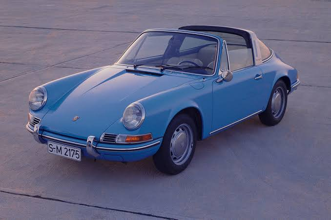
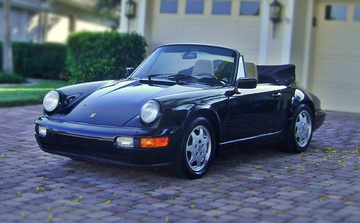
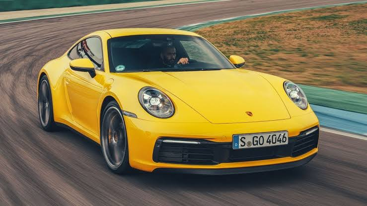

| Company name | Porsche AG |
|---|---|
| Founder | Ferdinand Porsche |
| Founded on | 25 April 1931, Stuttgart, Germany |
| Headquarters | Stuttgart, Germany |
| Parent organization | Volkswagen Group |
| Chairman | Wolfgang Porsche |
| CEO | Oliver Blume |
| No.of production plants | |
| Customer service | 086550 00911 |
Ferdinand Porsche who established an engineering office in Stuttgart in the 1930s, laying the foundation for the company. Cars with sporty genes were designed there as early as 1931. After his son Ferry Porsche took over, this idea was carried forward and evolved into the Porsche 356. The first Sports Car to carry the Porsche name was manufactured as a production model from 1950 onwards in Zuffenhausen. From 1964 onwards, the 356 was replaced by another classic: the Porsche 911. Porsche officially launched the 7th generation of the Sports Car icon at the 64th International Motor Show (IAA) in Frankfurt/Main in 2011.
To invest in innovative technology, you need to expand. The future of the Porsche Development Centre in Weissach continues to take shape. The new design studio, a new wind tunnel and the electronics integration centre have already been opened. The new drive testing centre should be ready by 2016. One of the most modern Training Centres in the automotive industry is currently being constructed in Zuffenhausen and is scheduled to open in autumn 2015.
For Porsche, acting in a sustainable way means assuming responsibility towards people, the environment and society. It is therefore important that we play an active role in current as well as company-relevant discussions in relation to politics and society. In doing so, Porsche can ensure that all company activities comply with the respective laws, internal rules, values and agreements.
